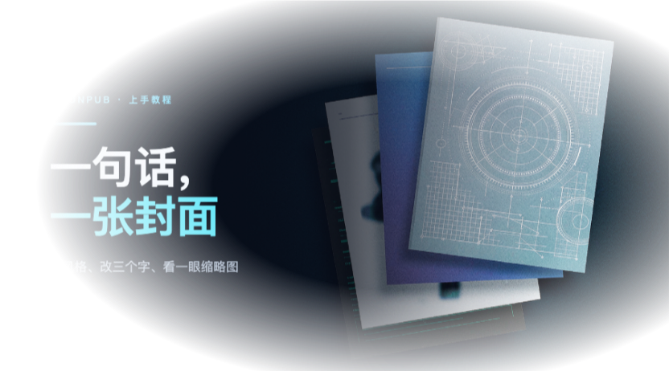
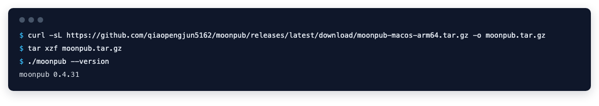
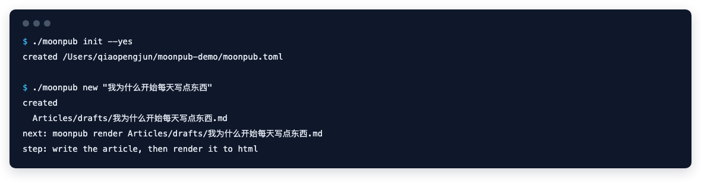
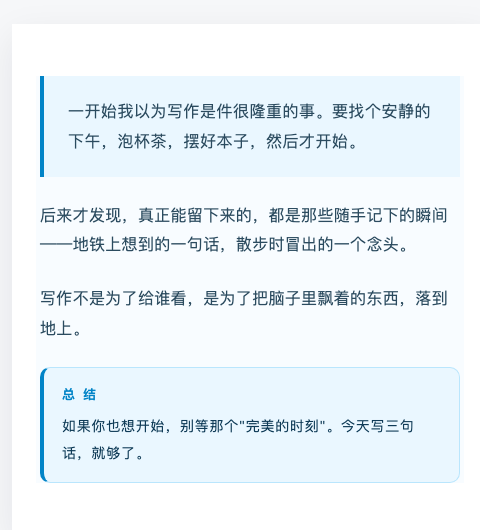
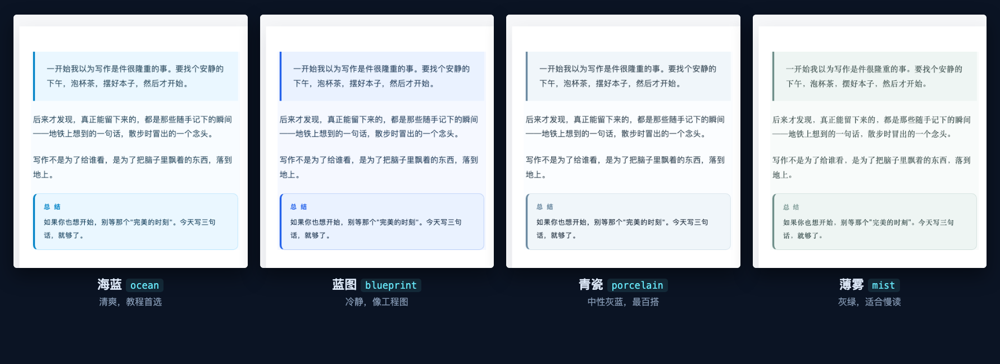
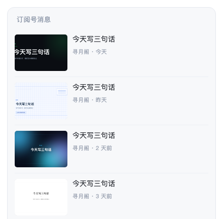
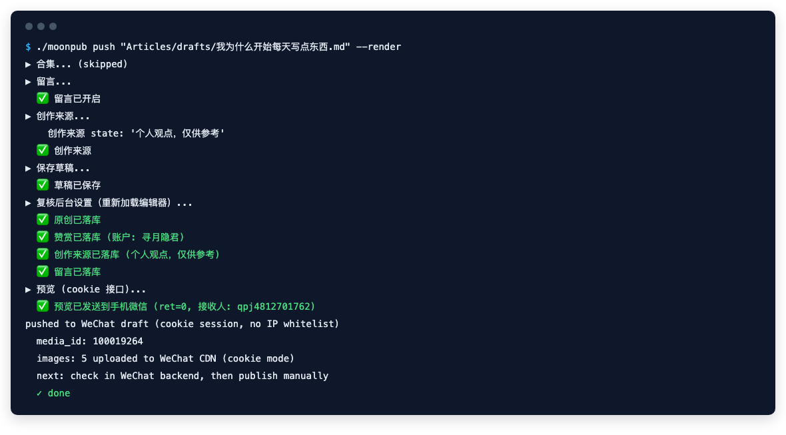

Markdown 进，公众号草稿出。
排版、封面、原创赞赏设置全自动，最后那一下「发表」永远留给你。
在电脑上用 Markdown 写正文。任何编辑器都行，Obsidian、VS Code、纯文本。
排版、生成封面、上传图片、设置原创/赞赏/留言，把草稿推进公众号后台。
在手机上看一遍预览，确认没问题，自己按下发表。它绝不替你做这一步。
一句话：它替你干重复的活，不替你做决定。
全部在你自己的电脑上跑。文章、配置、公众号凭证都不上传任何服务器。
| 环节 | 手动做 | 用 MoonPub |
|---|---|---|
| 排版样式（字号、间距、引用块） | 20–25 分钟，每篇重来 | 改一个词，3 秒 |
| 封面图 | 开设计软件 5–10 分钟 | 一条命令，30 秒 |
| 后台四项设置（原创/赞赏/留言/来源） | 每次手点，容易漏 | 推送时自动做完并复核 |
| 多篇风格一致 | 靠记忆，经常不一样 | 同一个主题名，永远一样 |
| 合计 | 约 30–40 分钟 | 约 3 分钟 |
省下的不是创作时间，是每篇都要重来一遍的重复劳动。
每一步的结尾，它都会打印下一条该敲的命令（next: …）。不用背命令。


下载解压就能用——不需要装 Rust 或 Node，也不用懂编程。init 建配置，new 建文章骨架。

$ moonpub render Articles/drafts/我为什么开始每天写点东西.md rendered html: …/我为什么开始每天写点东西.html draft: …/我为什么开始每天写点东西.draft.json

同一篇文章、同一段文字，只改 theme 后面一个词：海蓝 / 蓝图 / 青瓷 / 薄雾。挑不准就用 blueprint 或 porcelain。

封面同理：--style 换一个词。缩到列表 96×66 才是真考验——纯白那张糊成一片，深色和渐变还站得住。

凭什么信它：1072 个自动化测试 · 行覆盖 85.2%（低于门槛 CI 直接红）· 5 个平台 · 0 依赖漏洞 · 11 个发布资产带 sha256。
发布器、渲染器、封面主题、导出目标、钩子都做成可扩展接口，为多平台打地基。
当前笔记一键渲染/预览/出封面，状态看得见，触达微信的动作要显式点击。
Zola / Hugo 导出 → WordPress REST API → Ghost。只接有官方 API 的平台。
可选付费层与模板市场只是方向草案，未承诺。硬边界：不托管凭证、不代发、不绕审核。
# 去 Releases 页下对应平台的包，解压，然后： $ sudo mv moonpub /usr/local/bin/ $ moonpub init --yes $ moonpub new "我的第一篇文章" $ moonpub render Articles/drafts/我的第一篇文章.md $ moonpub preview Articles/drafts/我的第一篇文章.md